|

|
Contents
The goal of this project is to extend the techniques we learned in class, for one-dimensional gradient descent, to a two-dimensional domain space, training a machine learning model called linear regression. This problem is also known as curve fitting. As part of this project, you will learn how to compute with vectors instead of scalars. Please use starter kit file regression-starterkit.ipynb. You will be doing your work in your repository regression-userid cloned from github.
Given training data 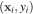 for 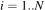 samples with dependent variable yi, we would like to predict a y for some 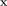 not in our training set. is generally a vector of independent variables, but we'll use a scalar in this exercise. If we assume there is a linear relationship between and y, then we can draw a line through the data and predict future values with that line function. To do that, we need to compute the two parameters of our model: a slope and a y intercept. (We will see the model below.)
For example, let's compare the number of people who died by becoming tangled in their bedsheets versus the per capita cheese consumption. (Data is from spurious correlations.) Here is the raw data:
If we plot the data across years, we see an obvious linear relationship:
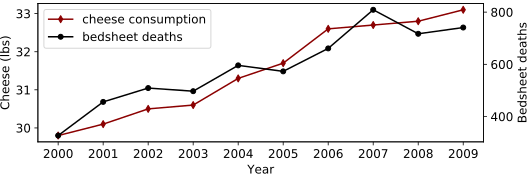We can also do a scatterplot of cheese versus deaths:
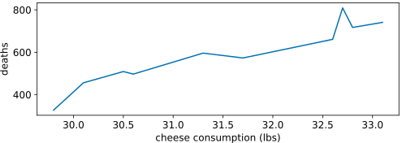Recall the formula for a line from high school: 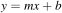. We normally rewrite that using elements of a vector coefficients, 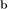 (in bold), in preparation for describing it with vector notation from linear algebra. For simplicity, though, we'll stick with scalar coefficients for now:
We use notation 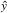 to indicate that it approximates y from our data set but is not necessarily equal to any of the true target yi.
The “best line” is one that minimizes some cost function that compares the known each yi value at xi to the predicted of the linear model that we conjure up using parameters 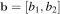 where 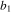 is the y-intercept and 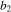 is the slope of the line. A good measure is the mean squared error. The cost function adds up all of these squared errors across N observations to tell us how good of a fit our linear model is:
Inlining the expression for our model, we get:
As we wiggle the linear model parameters, and , the value of the cost function will change. The following graphs shows the errors/residuals that are squared and averaged to get the overall cost for two different “curve fits.”
| 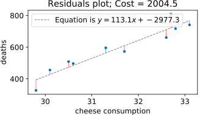 | 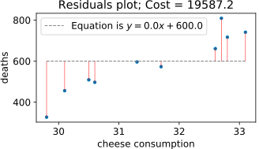 |
The good news is that we know the cost function is a quadratic (by construction), which is convex and has an exact solution. All we have to do is figure out where the cost function flattens out. Mathematically, that is when the partial derivatives of the cost function are both zero. The partial derivative for a particular dimension is just the rate of change of that dimension at a particular spot. It's like a skier examining the slope of his or her skis against the mountain one at a time. (For more, see The intuition behind gradient descent in an article that explains gradient boosting, which you will probably look at for your second machine learning course.)
Instead of solving that equation for symbolically, we'll use gradient descent to minimize the cost function. It's important to learn about this numerical technique because there are lots and lots of cost functions that are not simple little quadratics with symbolic solutions. For example, if we change this problem from a predictor to a classifier (logistic regression), then training requires an iterative method like gradient descent.
To show our prediction model in action, we can ask how many deaths there would be in if we consumed an average of 32 lbs of cheese. To make a prediction, all we have to do is plug 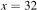 into the equation for a best fit line, 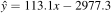, which gives us 641.9 deaths.
Before trying to minimize the cost function, it's helpful to study what the surface looks like in three dimensions, as shown in the following graphs. The X and Y dimensions are the coefficients, , of our linear model and the Z coordinate (up) is the cost function.
|
|
|

What surprised me is that changes to the slope of the linear model's slope coefficient , away from the optimal 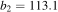, cost much more than tweaks to the y intercept, . Regardless, the surface is convex. If you look at the third graph, you can see that at a 45° angle, the surface is a very shallow bowl, not a valley or saddle. Unfortunately, based upon the deep trough that grows slowly along the diagonal of 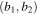, gradient descent takes a while to converge to the minimum. We will examine the path of gradient descent for a few initial starting points.
The recurrence relation for updating our estimate of  that minimizes 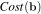 is the same as the single-variable gradient-descent we did in class but with vectors for 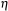 and instead of scalars:
that minimizes 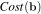 is the same as the single-variable gradient-descent we did in class but with vectors for 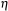 and instead of scalars:
where
The symbolic partial derivatives with respect to the individual model parameters are:
and
Combining those two partial derivatives into a vector gives us the gradient:
Note that we could approximate that symbolic gradient using partial finite differences (to avoid calculus) if we wanted, but it's more expensive:
The 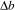 variable is a very small delta step away from a specific coordinate in each dimension in turn.
The minimization algorithm for the mean squared error cost function, Cost, taking vector looks like:
![\setlength{\algomargin}{3pt}
\SetAlCapSkip{-10pt}
\begin{algorithm}[H]
\LinesNumbered
\SetAlgorithmName{Algorithm}{List of Algorithms}
\SetAlgoSkip{}
\SetInd{.5em}{.5em}
\TitleOfAlgo{{\em minimize}($\vec b_0 = [b_1, b_2]$, $\eta$, {\em precision}) {\bf returns} coefficents $\vec b$}
Let $\vec b = \vec b_0$\\
\Repeat{$||(Cost(\vec b)-Cost(\vec b_{prev}))|| < precision$}{
Let $\nabla Cost = \begin{bmatrix}
\sum_{i=1}^{N}(b_2 x_i + b_1 - y_i) \vspace{3mm}\\
\sum_{i=1}^{N}(b_2 x_i + b_1 - y_i)x_i\\
\end{bmatrix}\vspace{3mm}\\
Let $\vec b_{prev} = \vec b$\\
Let $\vec b = \vec b_{prev} - \eta \otimes \nabla Cost$\vspace{1mm}\\
}
\Return{$\vec b_{t+1}$}\\
\end{algorithm}](images/latex-23655921E9C82A5D2FCA51DDE16D3459.svg)
The 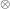 operator is element-wise multiplication and is sometimes called the Hadamard product. (There isn't a standard notation for element-wise multiplication, unfortunately.) is a vector with learning rates for both directions. This is important because the curvature in the two dimensions is radically different. Using a learning rate that is small enough to prevent divergence in would be glacially slow for .
To use this function, we just pick an initial 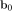 (at random if we want) and call minimize with a learning rate vector and the desired precision (max change in f between iterations).
|
|
|
The starting point is the red X and the ending point is the black X. Notice that the minimization algorithm overshoots in then comes back only to drift back towards its original overshoot. This is adjustable by tweaking the learning rate. For example, if we decimate the learning rate by 10, the graph appears to make a sharp turn rather than overshooting and coming back. However, minimization is dramatically slower and takes an order of magnitude more steps to arrive at the solution.
You will use gradient descent to solve the linear regression problem above, using the same data from data/cheese_deaths.csv. As part of your final submission, you must provide heat maps with traces that indicate the steps taken by your gradient descent as I have shown above. In addition, you must display the learning rate vector beneath the statement about the number of steps like the following except with the question marks replaced with your learning rates.
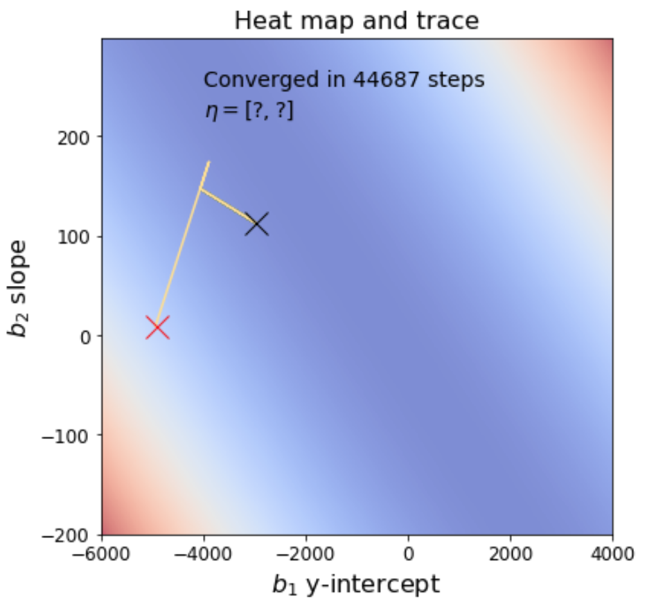
Start with something very small for the learning rates and ramp up the values until the minimization algorithm diverges instead of converging, then back them down one notch. Move them individually to find the optimal values that converge but as fast as possible. Have your program choose random starting 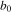 vectors.
Deliverables: Download and fill in in the regression-starterkit.ipynb notebook, renaming it to regression.ipynb. Make sure that you have added it to your repository, regression-userid, committed it, and pushed to github. Here is the starter kit with sample output (PDF). Make sure when you submit your notebook that it has been executed and shows all of the images and output.
You must tweak the learning rate and precision so that your results agree at least with the first three decimal points of the analytic solution: 2004.4563215 to get credit for that component of the project. The cheese versus deaths plots are worth 20% and the minimization and related functions plus heat map with proper minimization trace is worth 80%.